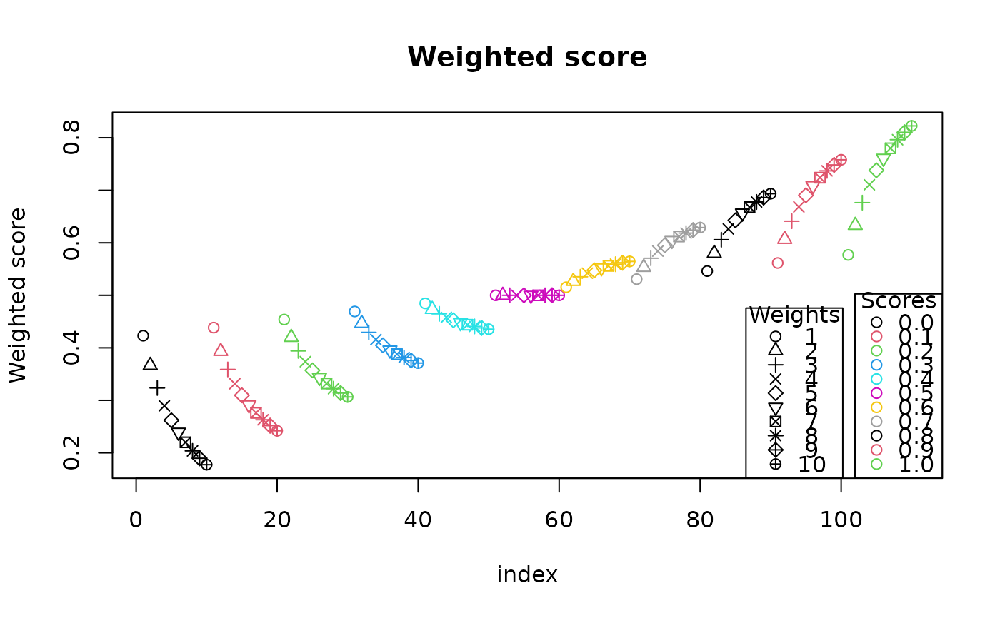

Weighted score
weighted_score.RdWeight a score against a population
Examples
scores <- rep(seq(0, 1, .1), each = 10)
weights <- rep(1:10, 11)
weighted <- weighted_score(scores, weights)
plot(
weighted,
xlab = "index",
ylab = "Weighted score",
col = factor(scores),
pch = weights,
main = "Weighted score"
)
legend(
"bottomright",
legend = format(seq(0, 1, .1)),
col = 1:11,
pch = 1,
title = "Scores"
)
legend(
"bottomright",
inset = c(0.12, 0),
legend = format(1:10),
col = 1,
pch = weights,
title = "Weights"
)
